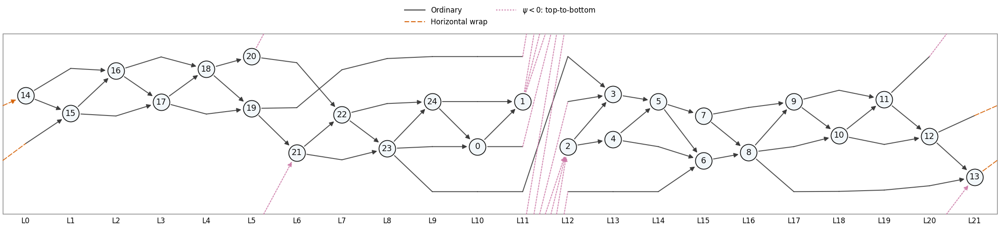
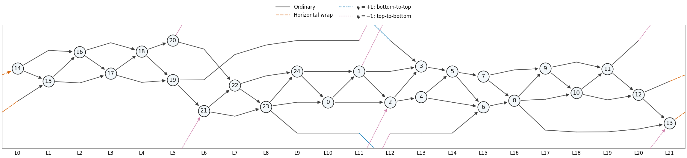
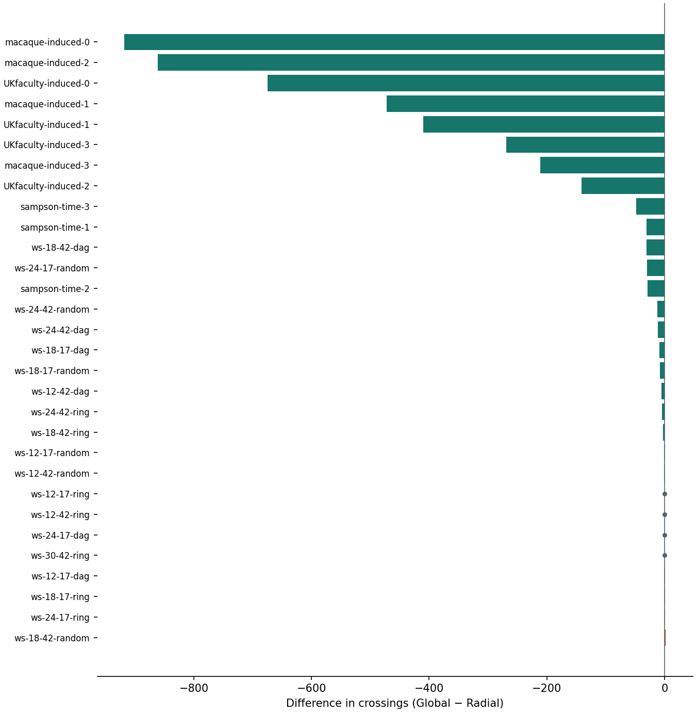
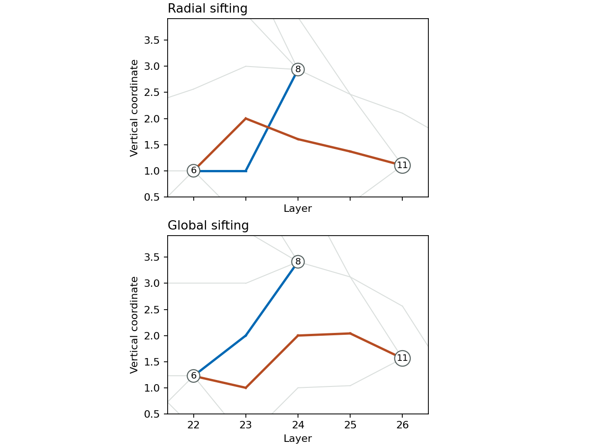
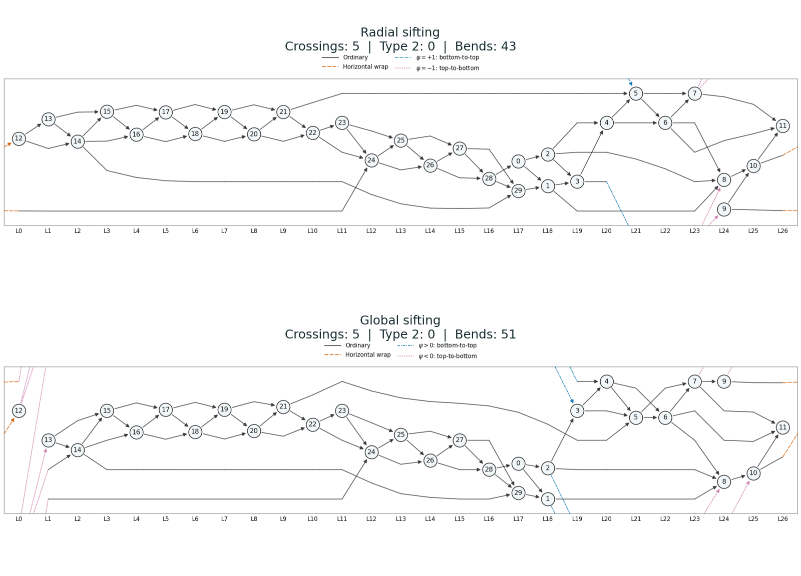
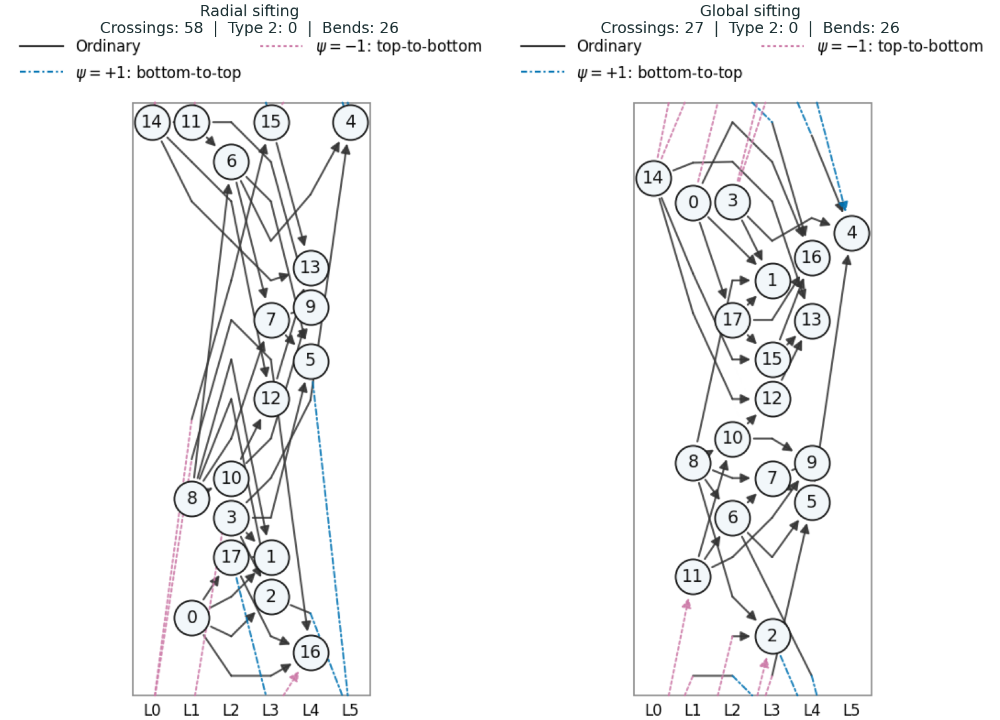
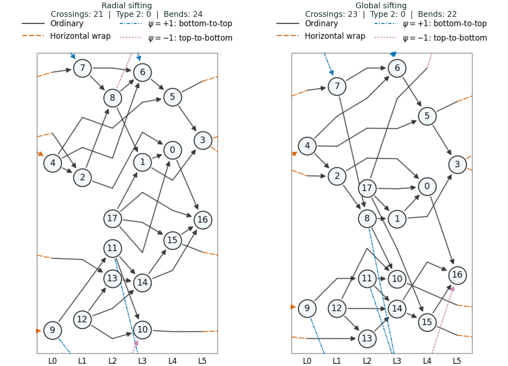
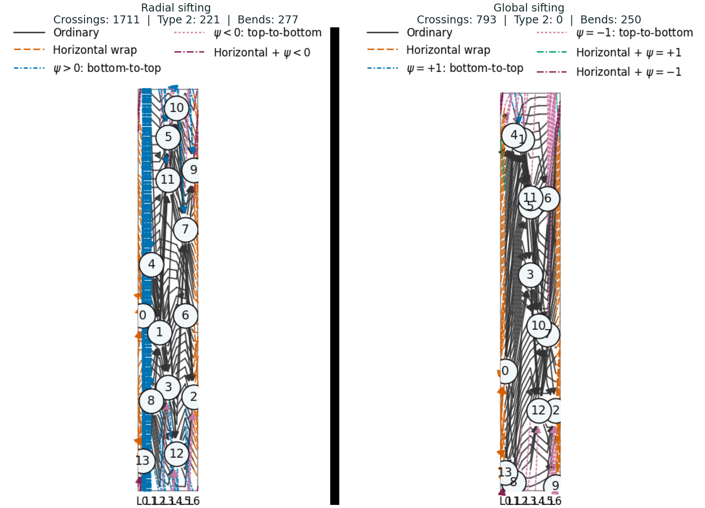

UNWINDを省いた効果
Global Siftingは共通の切れ目を使い、長辺の内部線分の巻き数を0に保った状態で探索する。その後の回転や境界選択では、表示上の巻き数が変わることがある。
25ノードの再現例では、同じ層割当・Global Sifting結果に変更前と変更後の後処理を適用した。共通の回転後に第11層から第12層へ向かう長辺の内部線分が一つだけ巻き数+1になった。変更前のUNWINDは同じ層間の全線分から1を引いてその線分を0にする過程で、別の2線分の巻き数を−2にした。変更後は上下の総通過が9回から5回に減り、長辺の内部線分のうち1本が上下をまたぐ。
| 指標 | 変更前のGlobal（UNWINDあり） | 変更後のGlobal（UNWINDなし） |
|---|---|---|
| 交差数 | 3 | 3 |
| タイプ2交差数 | 0 | 0 |
| 上下境界をまたぐ線分数 | 7 | 5 |
| 上下境界の総通過回数 | 9 | 5 |
| 上下境界をまたぐ長辺の内部線分数 | 0 | 1 |
| 曲がり数（1°超） | 31 | 29 |


この25ノード例は手法の比較用30入力に加えず、UNWINDの変更前後を確かめる個別例として計測した。個別例の測定値CSV
数値比較
表の「減少・同数・増加」は、各入力でGlobalの値を同じ入力のRadialと比べた件数。総通過回数は各線分の巻き数の絶対値の和で、巻き数−2は2回と数える。
| 辺の向き・入力群 | 入力数 | Radial平均 | Global平均 | 減少 / 同数 / 増加 |
|---|---|---|---|---|
| 円環沿い | 7 | 2.71 | 2.00 | 2 / 3 / 2 |
| ランダム方向 | 6 | 25.00 | 16.67 | 5 / 0 / 1 |
| DAG | 6 | 32.67 | 23.50 | 4 / 1 / 1 |
| 公開データ | 11 | 734.55 | 365.00 | 11 / 0 / 0 |
| 指標 | Radial | Global | 減少 / 同数 / 増加 |
|---|---|---|---|
| 交差数（層順・巻き数） | 43.5 | 26.5 | 22 / 4 / 4 |
| 交差数（描画の中心線） | 43.5 | 26.5 | 22 / 4 / 4 |
| タイプ2交差 | 0.0 | 0.0 | 10 / 20 / 0 |
| 曲がり数（1°超） | 34.0 | 36.5 | 14 / 3 / 13 |
| 3回以上曲がる元の辺の本数 | 3.0 | 4.0 | 9 / 8 / 13 |
| 総辺長 | 158.8 | 161.4 | 19 / 0 / 11 |
| 上下境界をまたぐ線分数 | 7.5 | 7.0 | 16 / 1 / 13 |
| 上下境界の総通過回数 | 7.5 | 7.0 | 14 / 2 / 14 |
| 交差削減工程（秒） | 0.156 | 0.448 | 7 / 0 / 23 |
合成入力での交差数の減少・同数・増加は 11 / 4 / 4 件、公開データ試行では 11 / 0 / 0 件だった。 交差の単純合計は合成入力で 365 → 255、公開データで 8080 → 4015。 単純合計には交差の多い入力が強く反映される。
上下境界の通過は、全入力で合計 821 → 309 回だった。入力ごとの減少・同数・増加は 14 / 2 / 14 件で、減った回数の大きい入力が合計に強く反映されている。
タイプ2は、長辺の内部線分同士の交差を指す。Radialで発生したのは10入力。Globalでは全30入力で0件だった。 交差削減工程の時間は、入力ごとのGlobal/Radial比の中央値で2.40倍だった。 座標を描いた後の幾何交差と層順・巻き数による交差が、どちらかの方式で一致しなかった入力は0件。
平滑化を0回に揃えた対照では、曲がり数がGlobalで減少・同数・増加した入力はそれぞれ 11 / 2 / 17 件だった。座標処理の選択も曲がりに影響する。

描画例
中央タイルを同じ描画設定で表示した。縦長の図は左がRadial、右がGlobal。横長の図は上がRadial、下がGlobal。線がどこで交差し、長い辺がどこで向きを変えるかを比較できる。
30ノードの例では全体の交差数は 5 → 5。 指摘のあった6→8と6→11の相互交差は 1 → 0。 6→11の曲がりは、平滑化4回で 3 → 3、 平滑化0回で 3 → 3 だった。













Globalは各長辺のダミー頂点列の相対順を保つため、層ごとに異なる順序を取りたい場合にも同じ順序で通す。この制約はタイプ2交差を防ぎ、層順変更の選択肢を減らす。全交差数や曲がり数の改善幅は、入力と座標処理に依存する。
実装と比較条件
Radial は2007年論文を参照した既存のトーラス実装で、隣接する帯を一つずつ評価し、タイプ2交差には対象帯の線分数を重みとして使う。 Global は2011年論文 §5.4 をトーラスに適用した方式。元頂点を単独のブロック、各長辺のダミー頂点列を一つのブロックとし、全層で共有する順序の中で挿入候補を探索し、影響する帯全体の交差数を減らす。最終層から第1層へ戻る帯も評価する。外部線分の巻き数は帯ごとに −1・0・1 のparting候補を調べ、共有の切れ目では内部線分の巻き数を0にする。論文のpartingを順次進める実装と比べ、今回は候補位置ごとに列挙するため、計時はこの実装同士の比較を示す。
統制条件。 各入力で層割当とダミー挿入を一度だけ実行し、同じ結果を両方式に渡した。 初期の層順には共通の重心法を使い、Globalの探索前に全層で共有するブロック順へ射影した。巻き数の初期化も各方式の手順に従った。 同じ5回設定を指定し、回転・境界最適化・周期射影・BKを共通にした。RadialにのみUNWINDを適用した。Globalは改善が止まると早期終了する。 各方式を3回ずつ交互に実行し、交差削減工程の中央値を記録した。工程時間にはsiftingと各方式に適用した後処理を含む。同じarm64環境上の経過時間で、一部の測定中にテスト等も実行した。 層割当はローカルGurobiでモデルごと3秒・1スレッド。制限つき求解を含む比較入力は1件だった。
入力と限界。 Watts–Strogatzの6骨格を3通りに向けた18入力と、30ノードの追加例、Sampson・UKfaculty・macaqueの公開データ試行を利用した。実データの時点や誘導部分グラフには重複があり、入力は独立な標本として扱っていない。全入力で両方式の結果を取得した。 比較したのは後処理を含む交差削減工程。共通の座標割当と平滑化では長辺ブロックの直線性を拘束しない。タイプ2が0でも完成図で3回以上曲がる辺はあり得る。
Bachmaier 2007 §IV-D · Bachmaierら 2011 §5.4 · Global Sifting実装 · 実験スクリプト · 公開データの出典とハッシュ
全結果
| 入力 | 入力群 | 頂点 | 層 | 交差 | タイプ2 | 上下通過 | 曲がり | 秒 |
|---|---|---|---|---|---|---|---|---|
| UKfaculty-induced-0 | 公開データ | 14 | 11 | 1146 → 471 | 202 → 0 | 115 → 20 | 380 → 358 | 7.315 → 19.970 |
| UKfaculty-induced-1 | 公開データ | 14 | 11 | 889 → 479 | 124 → 0 | 123 → 19 | 349 → 363 | 7.237 → 19.546 |
| UKfaculty-induced-2 | 公開データ | 14 | 7 | 230 → 89 | 19 → 0 | 31 → 5 | 96 → 103 | 0.645 → 1.531 |
| UKfaculty-induced-3 | 公開データ | 14 | 7 | 484 → 215 | 55 → 0 | 53 → 18 | 142 → 131 | 1.226 → 4.507 |
| macaque-induced-0 | 公開データ | 14 | 7 | 1711 → 793 | 221 → 0 | 146 → 31 | 277 → 250 | 7.352 → 27.691 |
| macaque-induced-1 | 公開データ | 14 | 7 | 1013 → 541 | 132 → 0 | 70 → 26 | 220 → 207 | 4.188 → 12.207 |
| macaque-induced-2 | 公開データ | 14 | 7 | 1696 → 835 | 205 → 0 | 115 → 31 | 276 → 261 | 7.397 → 26.985 |
| macaque-induced-3 | 公開データ | 14 | 5 | 511 → 300 | 29 → 0 | 26 → 27 | 102 → 101 | 1.221 → 4.200 |
| sampson-time-1 | 公開データ | 18 | 8 | 164 → 133 | 32 → 0 | 15 → 7 | 105 → 99 | 0.507 → 1.274 |
| sampson-time-2 | 公開データ | 18 | 6 | 115 → 86 | 0 → 0 | 26 → 3 | 77 → 76 | 0.511 → 1.961 |
| sampson-time-3 | 公開データ | 18 | 6 | 121 → 73 | 4 → 0 | 4 → 2 | 83 → 80 | 0.505 → 1.945 |
| ws-12-17-dag | DAG | 12 | 6 | 4 → 5 | 0 → 0 | 5 → 4 | 17 → 14 | 0.040 → 0.063 |
| ws-12-17-random | ランダム方向 | 12 | 7 | 4 → 3 | 0 → 0 | 2 → 4 | 16 → 19 | 0.025 → 0.025 |
| ws-12-17-ring | 円環沿い | 12 | 11 | 0 → 0 | 0 → 0 | 4 → 4 | 8 → 10 | 0.004 → 0.001 |
| ws-12-42-dag | DAG | 12 | 6 | 11 → 6 | 0 → 0 | 4 → 7 | 16 → 16 | 0.030 → 0.054 |
| ws-12-42-random | ランダム方向 | 12 | 10 | 4 → 3 | 0 → 0 | 7 → 7 | 20 → 24 | 0.030 → 0.027 |
| ws-12-42-ring | 円環沿い | 12 | 9 | 0 → 0 | 0 → 0 | 4 → 6 | 6 → 7 | 0.006 → 0.002 |
| ws-18-17-dag | DAG | 18 | 5 | 22 → 13 | 0 → 0 | 3 → 4 | 19 → 21 | 0.145 → 0.302 |
| ws-18-17-random | ランダム方向 | 18 | 7 | 12 → 4 | 0 → 0 | 8 → 3 | 33 → 31 | 0.079 → 0.143 |
| ws-18-17-ring | 円環沿い | 18 | 17 | 0 → 1 | 0 → 0 | 6 → 8 | 13 → 18 | 0.009 → 0.005 |
| ws-18-42-dag | DAG | 18 | 6 | 58 → 27 | 0 → 0 | 7 → 8 | 26 → 26 | 0.130 → 0.447 |
| ws-18-42-random | ランダム方向 | 18 | 6 | 21 → 23 | 0 → 0 | 3 → 4 | 24 → 22 | 0.063 → 0.153 |
| ws-18-42-ring | 円環沿い | 18 | 16 | 5 → 2 | 0 → 0 | 9 → 13 | 21 → 28 | 0.014 → 0.009 |
| ws-24-17-dag | DAG | 24 | 4 | 34 → 34 | 0 → 0 | 2 → 4 | 25 → 25 | 0.245 → 0.584 |
| ws-24-17-random | ランダム方向 | 24 | 8 | 56 → 26 | 0 → 0 | 8 → 3 | 50 → 48 | 0.168 → 0.550 |
| ws-24-17-ring | 円環沿い | 24 | 23 | 2 → 3 | 0 → 0 | 8 → 9 | 35 → 39 | 0.025 → 0.018 |
| ws-24-42-dag | DAG | 24 | 6 | 67 → 56 | 0 → 0 | 2 → 9 | 32 → 31 | 0.179 → 0.449 |
| ws-24-42-random | ランダム方向 | 24 | 6 | 53 → 41 | 0 → 0 | 2 → 7 | 40 → 43 | 0.183 → 0.719 |
| ws-24-42-ring | 円環沿い | 24 | 21 | 7 → 3 | 0 → 0 | 10 → 8 | 30 → 34 | 0.023 → 0.019 |
| ws-30-42-ring | 円環沿い | 30 | 27 | 5 → 5 | 0 → 0 | 3 → 8 | 43 → 51 | 0.041 → 0.047 |
PYTHONHASHSEED=0 MPLBACKEND=Agg ./theme2026-saku/bin/python experiments/compare_global_sifting.py output/global_sifting_20261123